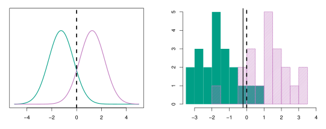

Code
source("../dsan-globals/_globals.r")
set.seed(5300)DSAN 5300: Statistical Learning
Spring 2025, Georgetown University
Today’s Planned Schedule:
| Start | End | Topic | |
|---|---|---|---|
| Lecture | 6:30pm | 7:00pm | Separating Hyperplanes → |
| 7:00pm | 7:20pm | Max-Margin Classifiers → | |
| 7:20pm | 8:00pm | Support Vector Classifiers → | |
| Break! | 8:00pm | 8:10pm | |
| 8:10pm | 9:00pm | Quiz 2 → |
source("../dsan-globals/_globals.r")
set.seed(5300)\[ \DeclareMathOperator*{\argmax}{argmax} \DeclareMathOperator*{\argmin}{argmin} \newcommand{\bigexp}[1]{\exp\mkern-4mu\left[ #1 \right]} \newcommand{\bigexpect}[1]{\mathbb{E}\mkern-4mu \left[ #1 \right]} \newcommand{\definedas}{\overset{\small\text{def}}{=}} \newcommand{\definedalign}{\overset{\phantom{\text{defn}}}{=}} \newcommand{\eqeventual}{\overset{\text{eventually}}{=}} \newcommand{\Err}{\text{Err}} \newcommand{\expect}[1]{\mathbb{E}[#1]} \newcommand{\expectsq}[1]{\mathbb{E}^2[#1]} \newcommand{\fw}[1]{\texttt{#1}} \newcommand{\given}{\mid} \newcommand{\green}[1]{\color{green}{#1}} \newcommand{\heads}{\outcome{heads}} \newcommand{\iid}{\overset{\text{\small{iid}}}{\sim}} \newcommand{\lik}{\mathcal{L}} \newcommand{\loglik}{\ell} \DeclareMathOperator*{\maximize}{maximize} \DeclareMathOperator*{\minimize}{minimize} \newcommand{\mle}{\textsf{ML}} \newcommand{\nimplies}{\;\not\!\!\!\!\implies} \newcommand{\orange}[1]{\color{orange}{#1}} \newcommand{\outcome}[1]{\textsf{#1}} \newcommand{\param}[1]{{\color{purple} #1}} \newcommand{\pgsamplespace}{\{\green{1},\green{2},\green{3},\purp{4},\purp{5},\purp{6}\}} \newcommand{\prob}[1]{P\left( #1 \right)} \newcommand{\purp}[1]{\color{purple}{#1}} \newcommand{\sign}{\text{Sign}} \newcommand{\spacecap}{\; \cap \;} \newcommand{\spacewedge}{\; \wedge \;} \newcommand{\tails}{\outcome{tails}} \newcommand{\Var}[1]{\text{Var}[#1]} \newcommand{\bigVar}[1]{\text{Var}\mkern-4mu \left[ #1 \right]} \]
\[ \begin{align*} &\log\left[ \frac{\Pr(Y = 1 \mid X)}{1 - \Pr(Y = 1 \mid X)} \right] = \beta_0 + \beta_1 X \\ &\iff \Pr(Y = 1 \mid X = x_i) = \frac{e^{\beta_0 + \beta_1 X}}{1 + e^{\beta_0 + \beta_1 X}} \end{align*} \]
\[ \widehat{y} = \begin{cases} 1 &\text{if }\Pr(Y = 1 \mid X = x) = \frac{e^{\beta_0 + \beta_1 x}}{1 + e^{\beta_0 + \beta_1 x}} > t \\ 0 &\text{otherwise} \end{cases} \]
\[ \underbrace{\Pr(Y = k \mid X = x)}_{p_k(x)} = \frac{ \overbrace{\Pr(X = x \mid Y = k)}^{f_k(x)} \overbrace{\Pr(Y = k)}^{\pi_k} }{ \sum_{\ell = 1}^{K} \underbrace{\Pr(X = x \mid Y = \ell)}_{f_{\ell}(x)} \underbrace{\Pr(Y = \ell)}_{\pi_{\ell}} } = \frac{f_k(x) \overbrace{\pi_k}^{\mathclap{\text{Prior}(k)}}}{\sum_{\ell = 1}^{K}f_{\ell}(x) \underbrace{\pi_\ell}_{\mathclap{\text{Prior}(\ell)}}} \]
So if we do have only two classes, \(K = 2\) and \(p_1(x) = \frac{f_1(x)\pi_1}{f_1(x)\pi_1 + f_0(x)\pi_0}\)
Priors can be estimated as \(n_k / n\). The hard work is in modeling \(f_k(x)\)! With estimates of these two “pieces” for each \(k\), we can derive a classifier \(\widehat{y}(x) = \argmax_k p_k(x)\)
\[ (X \mid Y = k) \sim \mathcal{N}(\param{\mu_k}, \param{\sigma^2}) \iff f_k(x) = \frac{1}{\sqrt{2 \pi}\sigma}\exp\left[-\frac{1}{2}\left( \frac{x - \mu_k}{\sigma} \right)^2\right] \]
\[ \widehat{y}(x) = \argmax_{k}\left[ \frac{ \pi_k \frac{1}{\sqrt{2 \pi}\sigma}\exp\left[-\frac{1}{2}\left( \frac{x - \mu_k}{\sigma} \right)^2\right] }{ \sum_{\ell = 1}^{K}\pi_{\ell} \frac{1}{\sqrt{2 \pi}\sigma}\exp\left[-\frac{1}{2}\left( \frac{x - \mu_\ell}{\sigma} \right)^2\right] }\right], \]
\[ \widehat{y}(x) = \argmax_k[\delta_k(x)] = \argmax_{k}\left[ \overbrace{\frac{\mu_k}{\sigma^2}}^{\smash{m}} x ~ \overbrace{- \frac{\mu_k^2}{2\sigma^2} + \log(\pi_k)}^{\smash{b}} \right] \]



\[ \begin{align*} &\log\left[ \frac{\Pr(Y = 1 \mid X)}{1 - \Pr(Y = 1 \mid X)} \right] = \beta_0 + \beta_1 X \\ &\iff \frac{\Pr(Y = 1 \mid X = x_i)}{1 - \Pr(Y = 1\ \mid X = x_i)} = e^{\beta_0 + \beta_1 X} \\ &\iff \Pr(Y = 1 \mid X) = e^{\beta_0 + \beta_1 X}(1 - \Pr(Y = 1 \mid X)) \\ &\iff \Pr(Y = 1 \mid X) = e^{\beta_0 + \beta_1 X} - e^{\beta_0 + \beta_1 X}\Pr(Y = 1 \mid X) \\ &\iff \Pr(Y = 1 \mid X) + e^{\beta_0 + \beta_1 X}\Pr(Y = 1 \mid X) = e^{\beta_0 + \beta_1 X} \\ &\iff \Pr(Y = 1 \mid X)(1 + e^{\beta_0 + \beta_1 X}) = e^{\beta_0 + \beta_1 X} \\ &\iff \Pr(Y = 1 \mid X) = \frac{e^{\beta_0 + \beta_1 X}}{1 + e^{\beta_0 + \beta_1 X}} \end{align*} \]
(More normally-distributed \(X\) \(\implies\) more likely to “beat” Logistic Regression)↩︎